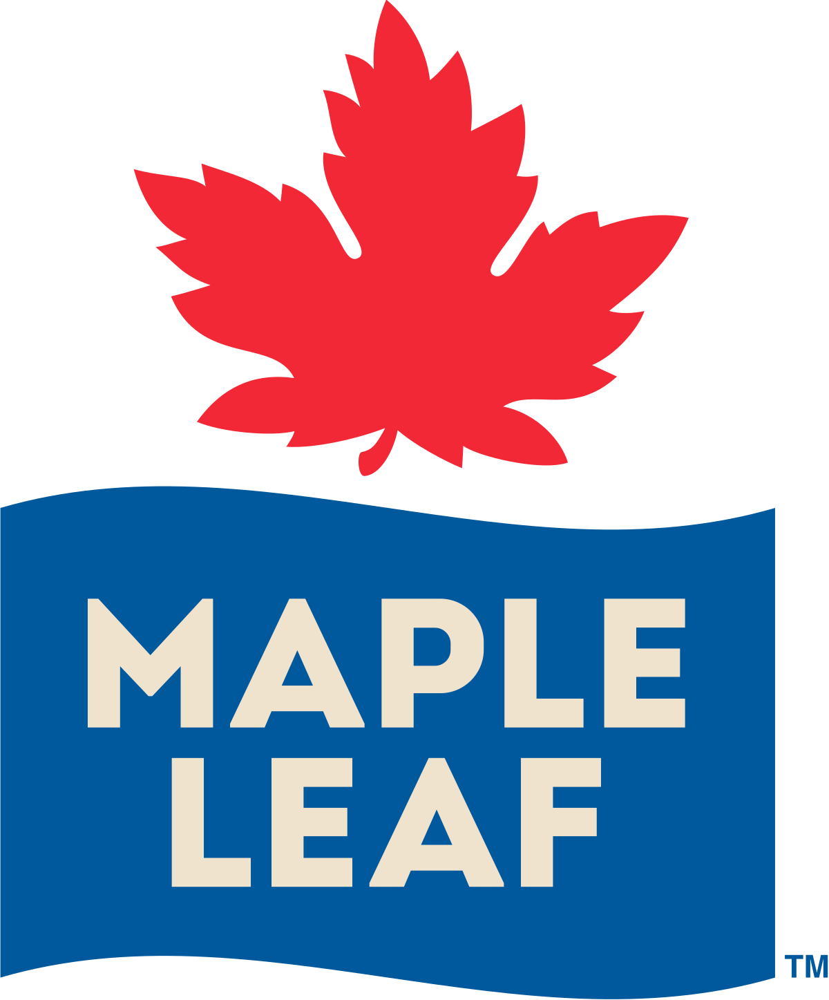
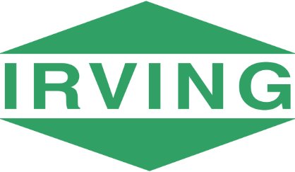
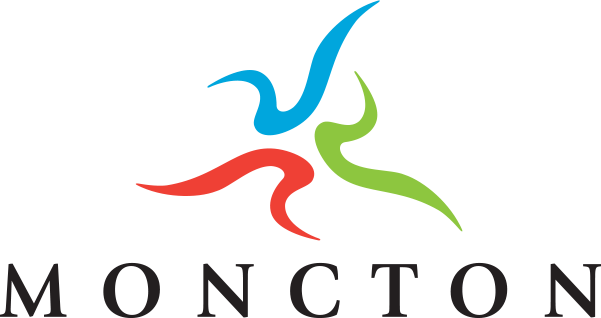

CV
Education
Sept 2021 – Present
Doctorate of Philosophy in Administration (Operations Management and Information Systems),
Schulich School of Business, York University,
Toronto, Ontario, Canada
Schulich School of Business, York University,
Toronto, Ontario, Canada
April 2017 – June 2020
Master Business Administration with specialization in Supply Chain Management,
Lazaridis School of Business and Economics, Wilfrid Laurier University,
Waterloo, Ontario, Canada
Lazaridis School of Business and Economics, Wilfrid Laurier University,
Waterloo, Ontario, Canada
Sept 2010 – April 2015
Baccalauréat en ingénierie mécanique (régime coopératif),
Université de Moncton,
Moncton, New Brunswick, Canada
Université de Moncton,
Moncton, New Brunswick, Canada
Professional Designation
June 2021
Licensed Professional Engineer (P.Eng.),
Professional Engineers Ontario, Ontario, Canada
Professional Engineers Ontario, Ontario, Canada
Research Areas
Artificial Intelligence, Innovation Management, Technology Management, Health Care Operations
Research Methods
Econometrics, Statistics, Machine Learning, Qualitative Analysis, Clinical Trials, Big Data Analysis
Professional Experience
2023 – Present
Visiting Graduate Student, Orthopaedic Biomechanics Laboratory,
Sunnybrook Research Institute, University of Toronto, Toronto, Ontario, Canada
Sunnybrook Research Institute, University of Toronto, Toronto, Ontario, Canada
2023 (Fall),
2024 (Fall)
2024 (Fall)
Visiting Graduate Student, College of Design and Engineering,
National University of Singapore, Singapore
National University of Singapore, Singapore
2024 (Winter)
Sessional Instructor, OMIS2010 - Operations and Supply Chain Management,
Schulich School of Business, York University, Toronto, Ontario, Canada
Schulich School of Business, York University, Toronto, Ontario, Canada
2020
Research Assistant, Lazaridis School of Business and Economics,
Wilfrid Laurier University, Waterloo, Ontario, Canada
Wilfrid Laurier University, Waterloo, Ontario, Canada
2011 – 2021
Second Lieutenant and Aviation Instructor, Cadet Instructor Cadre,
Royal Canadian Air Force, Canada (Various Locations)
Royal Canadian Air Force, Canada (Various Locations)
2019 – 2021
2018 – 2019
2018 – 2019
Associate Engineering Project Manager
Maintenance Supervisor
Blanco Canada Inc., Etobicoke, Ontario, Canada
Maintenance Supervisor
Blanco Canada Inc., Etobicoke, Ontario, Canada
2017 – 2018

Asset Reliability Specialist,
Maple Leaf Foods, Mississauga, Ontario, Canada
Maple Leaf Foods, Mississauga, Ontario, Canada
2016 – 2017
2015 – 2016
2015 – 2016

Paper Mill Process Engineering Specialist
Maintenance and Reliability Engineering Specialist
Irving Consumer Products, J.D. Irving Ltd., Toronto, Ontario, Canada
Maintenance and Reliability Engineering Specialist
Irving Consumer Products, J.D. Irving Ltd., Toronto, Ontario, Canada
2010 – 2015
Math and Science Tutor,
Éduc-Aide Inc., Dieppe, New Brunswick, Canada
Éduc-Aide Inc., Dieppe, New Brunswick, Canada
2014
2012
2012
Mechanical Intern (Coop)- Maintenance and Reliability
Mechanical Intern - Technical Support Group (Coop)
Énergie Électrique, Rio Tinto Alcan, Saguenay, Québec, Canada
Mechanical Intern - Technical Support Group (Coop)
Énergie Électrique, Rio Tinto Alcan, Saguenay, Québec, Canada
2013
Project Engineering Intern (Coop), Oil Sands Sustaining Projects,
Suncor Energy, Fort McMurray, Alberta, Canada
Suncor Energy, Fort McMurray, Alberta, Canada
2011

Field Inspector (Coop), Engineering Department,
City of Moncton, Moncton, New Brunswick, Canada
City of Moncton, Moncton, New Brunswick, Canada
Reach out with questions
If you have any questions or comments about my work, I invite you to reach out. If you add your email address I'll be happy to get back to you.